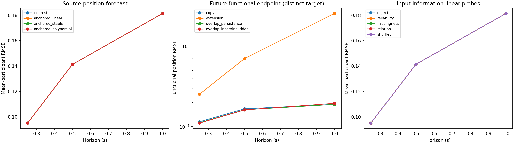

Exploratory source-state research. No promotion or scientific acceptance. Frozen v5 remains preserved.

| Method | 250 ms | 500 ms | 1 second |
|---|---|---|---|
| nearest | 0.09497 | 0.14129 | 0.18135 |
| shrinkage | 0.09412 | 0.14138 | 0.18135 |
| cv_joint | 0.10326 | 0.15219 | 0.21795 |
| cv_position | 0.10331 | 0.15229 | 0.21900 |
| nearest_joint | 0.09497 | 0.14129 | 0.18135 |
| nearest_position | 0.09497 | 0.14129 | 0.18135 |
| anchored_linear | 0.09497 | 0.14129 | 0.18135 |
| anchored_stable | 0.09497 | 0.14129 | 0.18135 |
| anchored_polynomial | 0.09497 | 0.14129 | 0.18135 |
221 matched histories; 201/183/146 supported targets. Functional endpoint and source-position metrics use different targets. Physical-event labels and independent references remain unavailable.
Two seeds select epoch zero in each anchored family: median forecasts equal nearest. All relational probes select zero correction. Overlap retention improves shorter-horizon functional endpoints modestly, while learned incoming correction still regresses at one second.